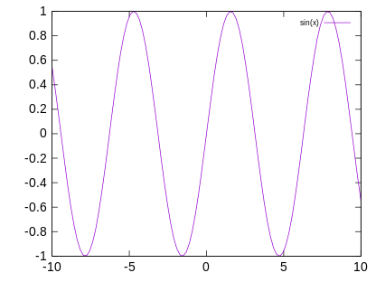
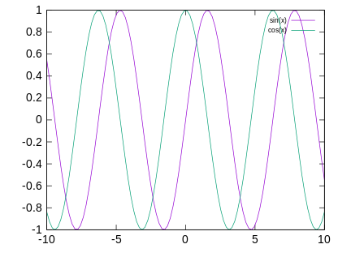
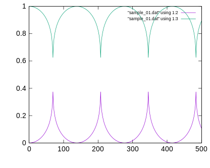
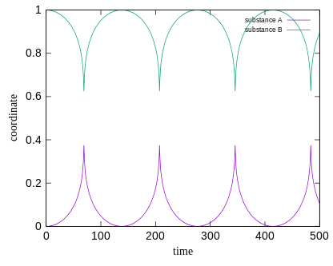

Gnuplotでグラフ作成¶
グラフ作成ツール”Gnuplot”について
このページでは、Gnuplotの基礎的な使い方を紹介します。
Gnuplotで何ができる？¶
データファイル(Excelみたいに数値が羅列されているファイル)などを元に、グラフを作成出来ます。
Excelでもグラフは作れますが、Gnuplotを使えばLinux上で簡単にグラフが作れます。
ミーティング資料、研究会スライド、ポスター、論文の制作など、様々な場面でグラフ作成は必須です。
とりあえずグラフをつくってみよう その１¶
Gnuplotを起動¶
まずは、Gnuplotがどんなものか試してみましょう。
ターミナル上で gnuplot と入力すると、下のような画面になるはずです。
[tshuuhei@mars ~]$ gnuplot
G N U P L O T
Version 5.2 patchlevel 5 last modified 2018-10-06
Copyright (C) 1986-1993, 1998, 2004, 2007-2018
Thomas Williams, Colin Kelley and many others
gnuplot home: http://www.gnuplot.info
faq, bugs, etc: type "help FAQ"
immediate help: type "help" (plot window: hit 'h')
Terminal type is now 'x11'
gnuplot>
これでGnuplotが起動出来ました。
Gnuplotを終了したいときは、quit, q, exit, Ctrl+dのどれかを押してください。
y=sin(x) のグラフを描く¶
練習として、y=sin(x)のグラフを描きましょう。
Gnuplotを起動したまま、f(x)=sin(x)と入力してください。
次に、plot f(x)と入力してください。
gnuplot> f(x)=sin(x)
gnuplot> plot f(x)

上のようなグラフが表示されましたか？
グラフ表示中は、次のような操作ができます。
操作 |
結果 |
|---|---|
マウスホイール上下 |
上下に画面移動 |
Shift +マウスホイール上下 |
左右に画面移動 |
Ctrl +マウスホイール上下 |
拡大・縮小 |
a |
元の縮尺に戻る |
q |
グラフを閉じる |
y=sin(x) と y=cos(x) を１つのグラフに描く¶
次に、y=sin(x)とy=cos(x)のグラフを同時に表示させましょう。
gnuplot> f(x)=sin(x)
gnuplot> plot f(x)
gnuplot> f(x)=cos(x)
gnuplot> replot f(x)

上のようなグラフが表示されましたか？
このように、plotの代わりにreplotとすると、１つ前に表示させたグラフに重ねてグラフを描くことができます。
グラフを画像として保存する¶
グラフを作成しましたが、このままではGnuplotを閉じるとグラフは消えてしまいます。
少し複雑ですが、次のようにすることでグラフを画像として保存することができます。
gnuplot> f(x)=sin(x)
gnuplot> plot f(x)
gnuplot> f(x)=cos(x)
gnuplot> replot f(x)
gnuplot> set terminal svg
gnuplot> set out "test.svg"
gnuplot> rep
set terminal svgと入力した際に、
Terminal type is now 'svg'
Options are 'size 600,480 fixed enhanced font 'Arial,12' butt dashlength 1.0 '
のような返事がありますが、これは正常なので気にせず入力を続けてください。
(test.svgの"test"の部分は自由に変えても大丈夫です。ただし、".svg"の部分は変えないでください。)
Gnuplotを閉じて、ディレクトリ内のファイルを見ると、"test.svg"というファイルが新たに作成されているはずです。
ターミナル上で、display test.svgと入力して、グラフが表示されることを確認してください。
(コマンドdisplayが使えない場合は、"ImageMagick"をインストールする必要があります。)
とりあえずグラフをつくってみよう その２¶
データファイルからグラフを作成¶
次は、データファイルからグラフを作成してみましょう。
上のファイルをダウンロードしてください。
中身は数値の羅列ですが、1列目が時刻、2列目が物体Aのx座標、3列目が物体Bのx座標とします。
このデータから、物体Aと物体Bが時間経過と共にどのような動きをしているか目視するためにグラフを作成しましょう。
gnuplot> plot "sample_01.dat" using 1:2 with line
gnuplot> replot "sample_01.dat" using 1:3 with line
plotの後に""で囲んでファイル名を指定します。
using 1:2は、ファイルの1列目をx軸、2列目をy軸に指定しています。
with lineは、各点の間を線でつないで表示させます。

上のように表示されたら成功です。
物体Aと物体Bが近づいたり離れたりを繰り返していることがわかります。
凡例と軸の名前を表示させる¶
次に、このグラフに凡例と軸の名前をつけましょう。
そうしないと、他人がグラフを見た時に何を表しているのか理解出来ません。
gnuplot> set xlabel "time"
gnuplot> set ylabel "coordinate"
gnuplot> plot "sample_01.dat" using 1:2 with line title "substance A"
gnuplot> replot "sample_01.dat" using 1:3 with line title "substance B"
コマンドの意味は、察してください。

上のようなグラフが表示されれば成功です。
"グラフを画像として保存する"で解説しているように画像として保存もしてみてください。
スクリプトファイルを読み込む¶
ここまでは"対話的に"Gnuplotのコマンドを打ち込んでグラフを作成しましたが、
打ち込みたいコマンドを予めファイルに書き込んでおき、Gnuplotにそのファイルを読み込ませることで
コマンドの打ち込みを"バッチ処理化"することができます。
スクリプトファイルの書き方¶
vi等を用いて、ファイルにGnuplotのコマンドを順番に書き込んでください。
ファイル名や拡張子は何でも構いません。
(拡張子は、わかりやすいように .gnuplot や .gp とするのがおすすめです。)
set xl "time [ps]"
set yl "f(x) [-]"
f(x)=sin(x)
p f(x) title "sin(x)"
pause -1
試しにこのように書き、適当な名前で保存してください。
次に、作成したスクリプトファイルを読み込ませてみましょう。
スクリプトファイルの読み込み方¶
読み込み方は簡単で、ターミナル上で次のように打ち込むだけです。
("test01.gp"の部分は自分で作成したスクリプトファイルの名前にしてください。)
gnuplot test01.gp
上の例の通りのスクリプトを作成し読み込ませた場合は、sin(x)のグラフが画面上に表示されるはずです。
qキーでグラフを閉じ、Enterキーを押すとGnuplotが終了します。